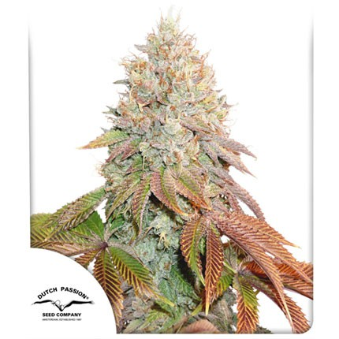

BANANA BLAZE
CRUCE:(Afghani Kush) x Ruderalis.
SABOR: Dulce y afrutado con notas terrosas.
INTERIOR: 8 semanas
EXTERIOR: Finales de marzo, principios de abril
PREDOMINANCIA: INDICA
PRECIO: $10000
Añadir al Carrito
DESRAN
CRUCE: Destroyer x Destroyer.
SABOR:Afrutado,mermelada de pera y pastel de manzana.
INTERIOR: 9 semanas y media .
EXTERIOR: principios de Abril.
PREDOMINANCIA: SATIVA
PRECIO: $10000
Añadir al Carrito
ORANGE BUD
CRUCE:Skunk#1.
SABOR: Frutas, cítrico, de naranja con toques de especias.
INTERIOR: Finaliza la floración en 50/60 días
EXTERIOR: Finales de marzo,Principios de abril.
PREDOMINANCIA: SATIVA.
PRECIO: $10000
Añadir al Carrito